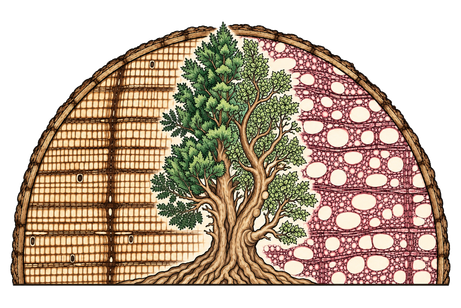
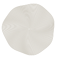
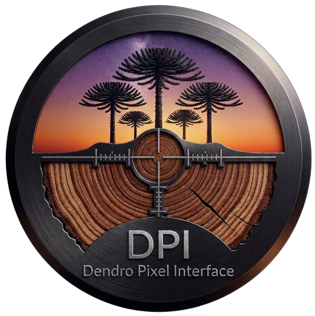
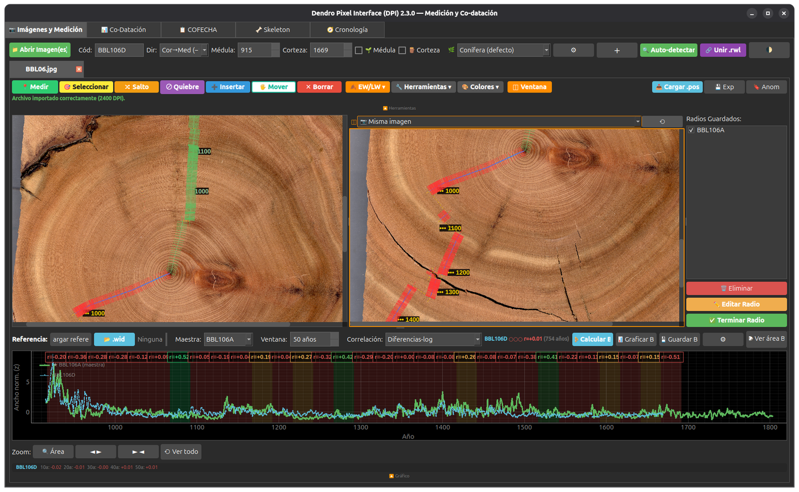
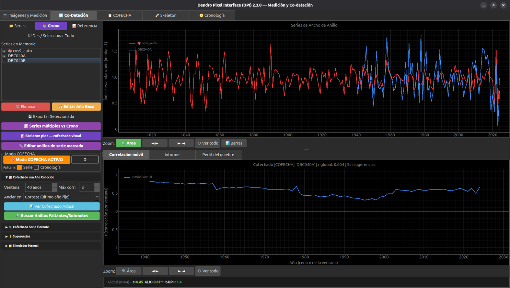
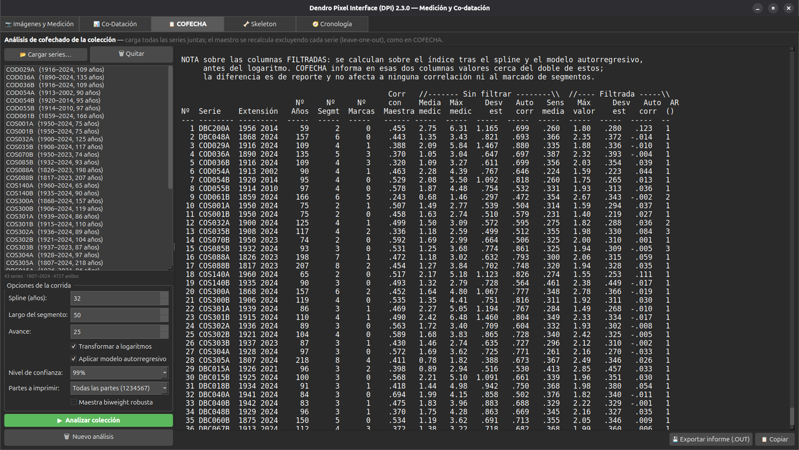
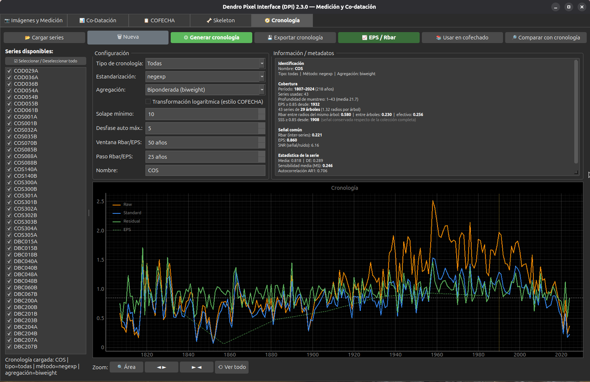
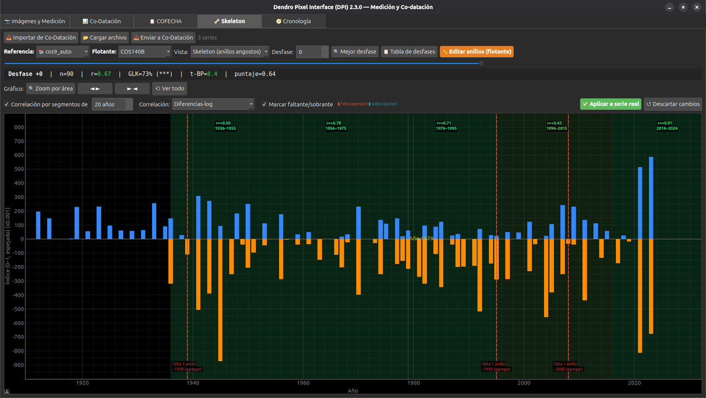

{kind=link}
{kind=link}
{kind=link}
{kind=link}
{kind=link}
Medición sobre imágenes
Calibra la escala, marca los límites de los anillos y trabaja con varios radios. Edita puntos, registra anomalías y conserva tu progreso.
PNG, JPG y TIFF · Importación de .pos

MoiCedrusCIENCIA EN LOS ANILLOS
Los árboles
guardan tiempo.
Nosotros lo leemos.
DPI · SOFTWARE LIBRE
Mide anillos de árboles, co-data tus series y revisa la calidad del fechado en un mismo lugar.
DPI reúne las herramientas para trabajar con tus muestras, desde la imagen digitalizada hasta una cronología con estadísticos de señal común.
Una herramienta para leer el tiempo en la madera.

MEDIRCOFECHARCOMPRENDER
LicenciaGPL-3.0-or-later
Intercambio de datosTucson · CSV · Excel
Código fuentePython · PyQt6
Archivo científicoDisponible en ZenodoCAPTURAS DEL PROGRAMA
De los límites de anillo al diagnóstico de la colección. Amplía cada captura para recorrer la interfaz.





Capturas compartidas en la presentación a la comunidad dendrocronológica de América Latina · septiembre de 2026.
DEL TARUGO A LA SERIE
Para trabajar con secciones transversales, tarugos y tablillas. La revisión visual de la muestra acompaña cada decisión de fechado.
Calibra la escala, marca los límites de los anillos y trabaja con varios radios. Edita puntos, registra anomalías y conserva tu progreso.
PNG, JPG y TIFF · Importación de .pos
Compara tus series con una referencia y explora la correlación en ventanas móviles para encontrar segmentos que necesitan revisión.
Series .rwl y referencias .wid
Explora posibles anillos faltantes o sobrantes, el rango del desfase y los años que conviene revisar primero sobre la muestra.
Diagnóstico e incertidumbre del fechado
Examina un informe de siete partes de tipo COFECHA. Contrasta segmentos, correlaciones y estadísticos para apoyar el control del fechado.
Implementación independiente
Construye cronologías crudas, estándar y residuales. Evalúa Rbar entre árboles, EPS y SSS para describir la señal de tu colección.
Estandarización y agregación de series
Trabaja con intensidad de madera, límites de leño temprano y tardío, detección asistida de anillos y estimación de médula faltante.
Herramientas complementarias de medición
EMPIEZA A TRABAJAR
Versión incluida en esta página. Verificar en GitHub.
DPI_Setup_v2.3.0.exe
Instala DPI y ábrelo desde el menú de aplicaciones.
Descargar .exeLinux · macOS · Windows
Ejecuta DPI desde el código fuente siguiendo los requisitos del proyecto.
Descargar código (.zip) Ver instrucciones de instalaciónPRIMEROS PASOS
La documentación incluye calibración, medición, formatos de archivo y atajos de teclado.
Guía de usoEl instalador incluye el entorno necesario para ejecutar el programa.
Necesitas Python 3.10 o superior y soporte para entornos virtuales. Descarga y descomprime el código; abre una terminal dentro de la carpeta que contiene run_dpi.py.
python3 -m venv .venv
.venv/bin/python -m pip install -r requirements.txt
.venv/bin/python run_dpi.pyEn Linux, puedes añadir DPI al menú de aplicaciones ejecutando una vez:
.venv/bin/python instalar_lanzador_linux.pyEn Ubuntu y Debian, si falta el soporte de entornos virtuales, instala el paquete python3-venv. Consulta el README para las dependencias y requisitos del proyecto.
SOFTWARE PARA LA CIENCIA
La referencia permite reconocer el desarrollo del programa y encontrar la versión utilizada.
DOI 10.5281/zenodo.22780901REFERENCIA · VERSIÓN 2.3.0
Rojas-Badilla, M. E. (2026). DPI — Dendro Pixel Interface (versión 2.3.0) [Software]. Zenodo. https://doi.org/10.5281/zenodo.22780901
Esta referencia corresponde a 2.3.0. Para citar otra versión, consulta su registro en Zenodo.
CONTACTO · CONVERSEMOS
¿Usas los programas, tienes una idea o quieres compartir tu experiencia? Escríbeme con tus comentarios, sugerencias y preguntas. También puedes avisarme si algo no funciona como esperabas.
Dendrocronología e hidroclima. Desarrollo software científico de forma independiente. Chile.
Desarrollo personal, sin financiamiento externo.